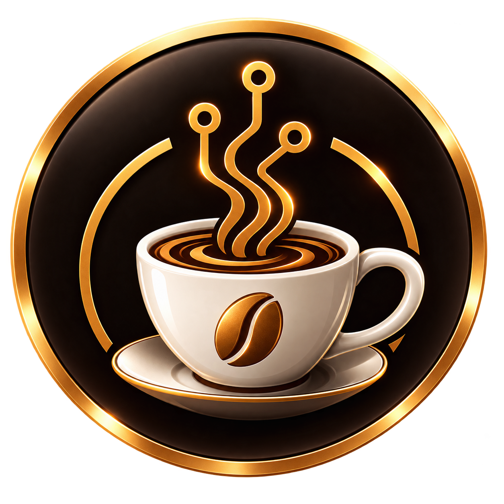
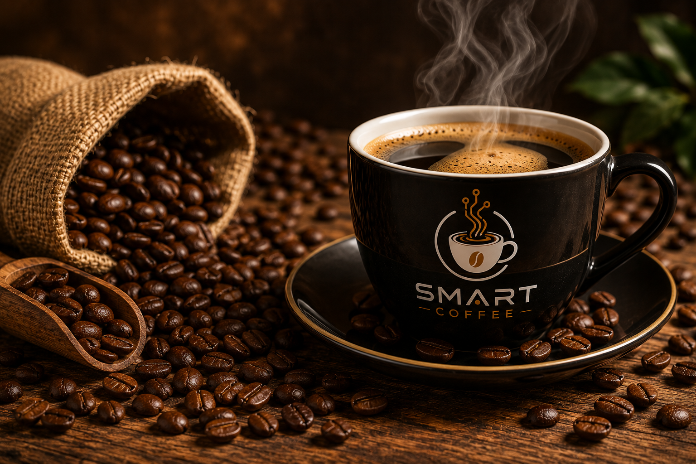
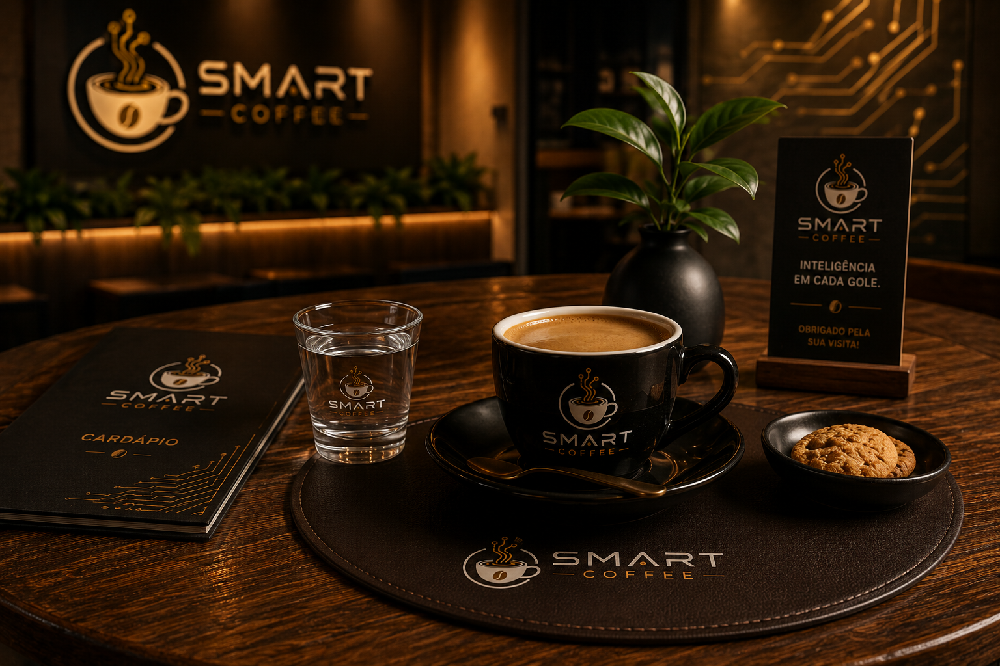
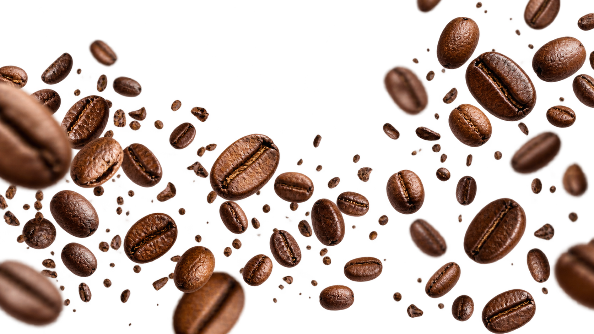
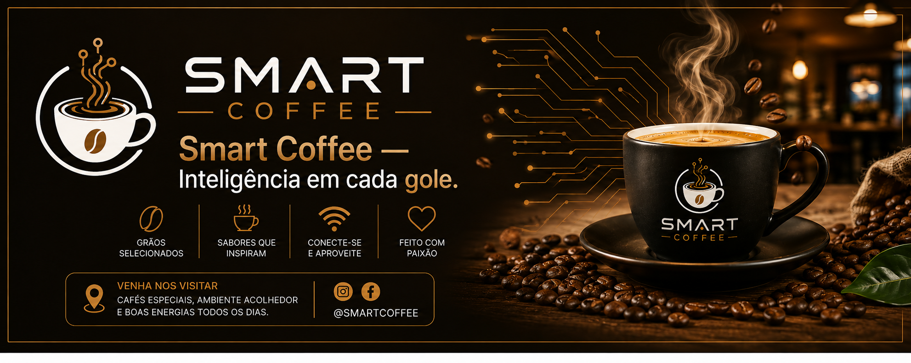
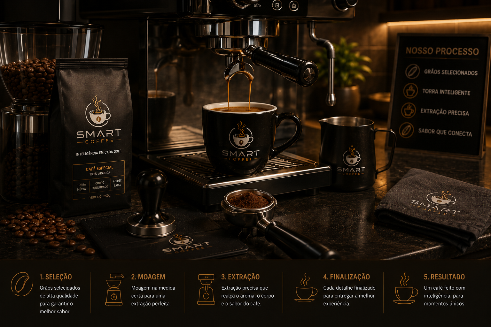

Cappuccino Tradicional
Equilíbrio entre sabor e cremosidade.
R$ 14,90
SmartCoffee

Quem somos
A SmartCoffee combina café de qualidade, tecnologia e um ambiente acolhedor.
Saiba maisNossos produtos
Equilíbrio entre sabor e cremosidade.
R$ 14,90
Leve, doce e irresistível.
R$ 16,90
Intenso como boas conversas.
R$ 12,90Nosso ambiente
Ambiente moderno, acolhedor e pensado para trabalhar, estudar ou apenas relaxar.
Conheça o espaço
Contato
Tem dúvidas, sugestões ou quer fazer um evento?
Envie uma mensagem.